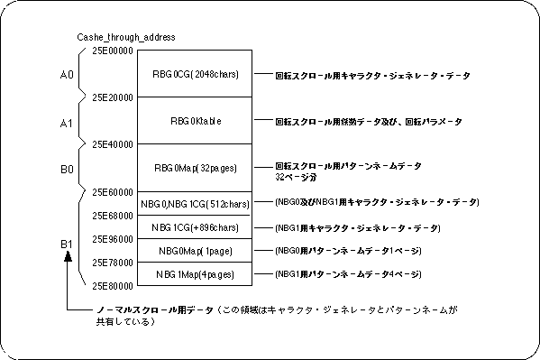

The VDP2 VRAM starting from 0x25E00000 is classified as follows when the system is initialized.

Setting value at system initialization:
The character generator has 256 color mode for all scrolls, and the pattern name is [1 word / 1 cell].
NBG0 is a 10-bit mode with a reversal flag for each cell, and other than NBG0 is a 12-bit mode that uses reversal for each surface.
The color RAM is a 16-bit 2048 color mode and no offset is used.
The back side is a single color, and color data (0000) is put in 25E3FFFE.